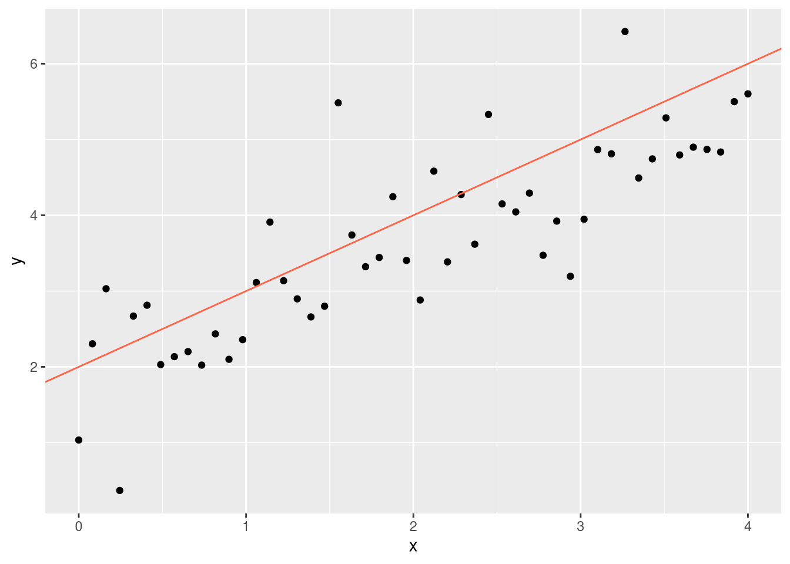
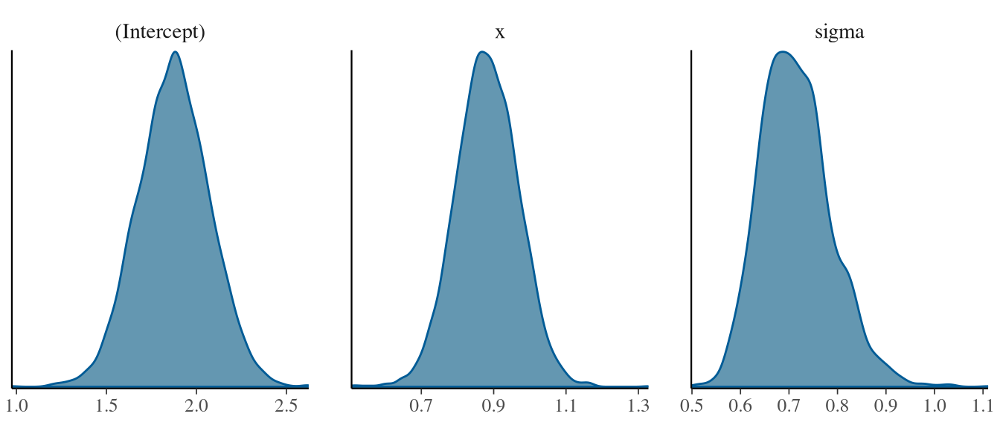
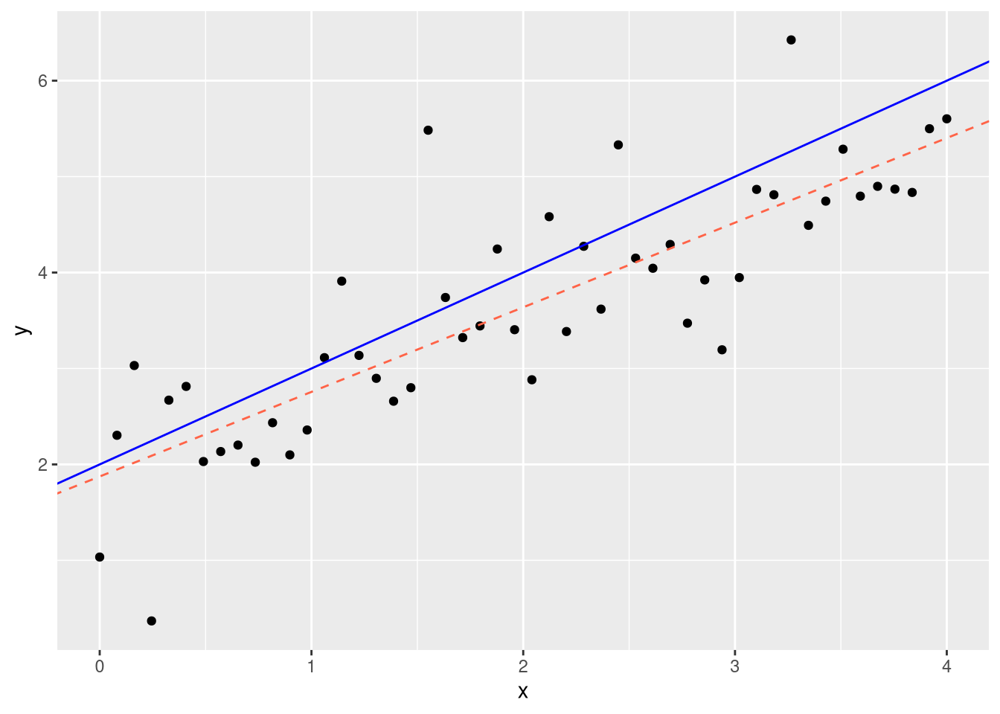
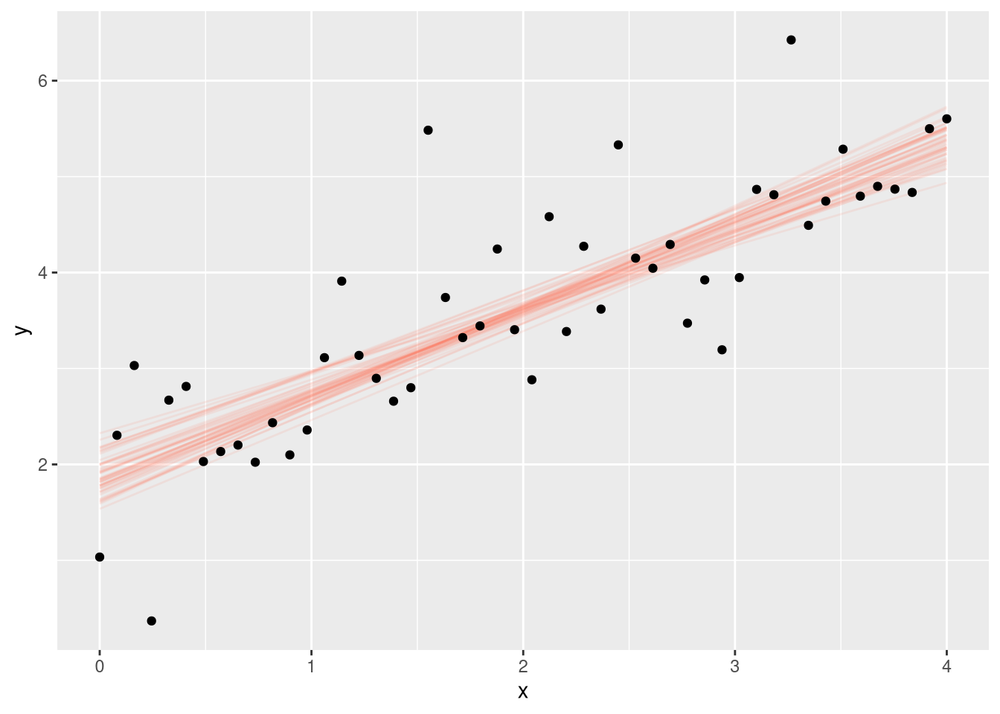
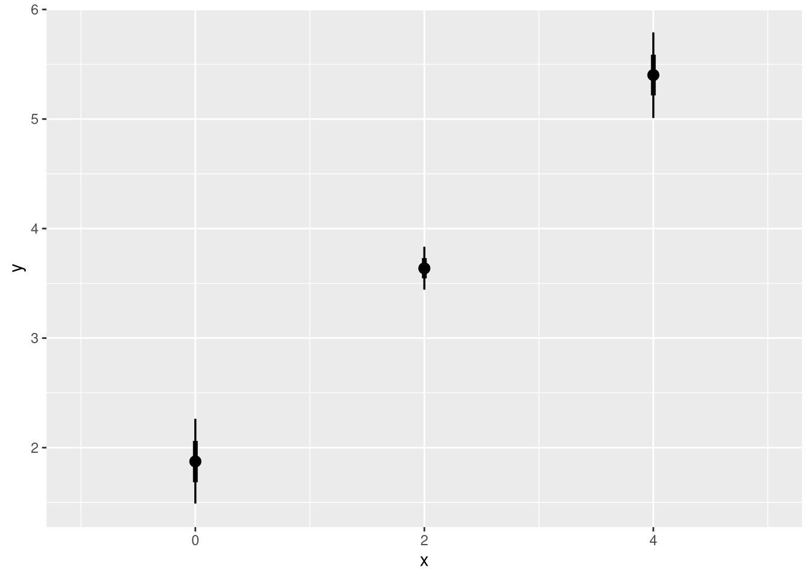

set.seed(1234)
# The model parameters
alpha <- 2
beta <- 1
sigma <- 0.8
# how many data points to simulate
n <- 50
# The predictors values for each of the n data points
x <- seq(0, 4, length.out = n)Quantitative Methods and Statistics
An applied course using the R programming language
Modeling statistical relationships
In the last sessions, we have seen how to use probability to both describe randomness in the data generating process we ultimately care about and for statistical inference about unknown quantities (i.e., parameters) in the model. These are the most basic bulding blocks of statistical modeling. However, so far the models we have looked at were not particularly interesting.
Just as with descriptive statistics, statistical modeling starts to shine once we look at multiple variables and their relationships with each other. Typically, variables play different roles in a statistical model: Often there is a primary variable of interest, the variation of which we want to understand. This is called the outcome or dependent variable. The purpose of the models we build is then to describe how the outcome varies with respect to one or more predictors or independent variables. With this setup, we focus our attention on modelling the DGP of the outcome while the predictor variables are typically taken for granted and not modeled explicitly.
Linear regression
The probably most widely used model of a statistical relationship is linear regression, which models an outcome \(y\) as a function of a predictor \(x\). As before, we don’t presume to fully understand the variation in the outcome \(y\) and thus model it as random. The most common choice is the normal distribution (which we have seen before):
\[ y \sim \textrm{Normal}(\mu, \sigma) \]
This time, however, we treat \(\mu\) (the mean of the distribution) not just as a parameter to be set or estimated, but as a function of a predictor \(x\). The simplest functional form of the relationship is just a line:
\[ \mu = \alpha + x \beta \]
Instead of just two parameters, this model now has three: The line parameters \(\alpha\) (the intercept) and \(\beta\) (the slope), which together determine the mean of the outcome \(y\), conditional on \(x\)x), and the standard deviation \(\sigma\), which determines the amount of random variation around the mean.
Simulating linear regression
As before, this is a generative model of a data generating process and a good way to see it in action is to simulate data from it. To do so, we need to set values for the thee parameters and for the predictor \(x\), which, remember, we assume to be given:
With these values, we can simulate a \(y_i\) for each of the \(n\) predictor values \(x_i\):
mu <- alpha + x * beta
y <- rnorm(n, mean = mu, sd = sigma)Let’s plot these simulated data alongside the line we just specified to get a better sense of what this did:
library(tidyverse)
dat <- tibble(x, y)
ggplot(dat, aes(x, y)) +
geom_point() +
geom_abline(
intercept = alpha,
slope = beta,
color = "tomato"
)
The red line represents the mean of \(y\) for any given \(x\), called the regression line or curve. It here corresponds to the parameter values of \(\alpha = 2\) and \(\beta = 1\) that we specified above. The data then randomly deviate around this line, with the typical amount of deviation determined by \(\sigma\).
Exercises
- Play around with different parameter values for \(\alpha\), \(\beta\), and \(\sigma\) and simulate corresponding data to get a feeling for how the model works.
- Set \(\beta\) and \(\sigma\) to zero and think about what they imply, respectively.
Inferring parameters from data
The linear regression model as stated above describes a specific kind of DGP. Simulation, as we just attempted ourselves, is to take this literally and generate data from the model, with parameters fixed to predetermined values. As discussed in the last session, in statistics we are typically interested in the inverse problem: We want to go backwards compared to simulation, inferring parameters that are treated as unknown from data that is treated as given.
Last session, we discussed Bayesian inference as one very general way to achieve this by computing the posterior distribution which summarizes the uncertainty over parameters given the data. For the simple coinflip / globe throwing model discussed before, there is a simple analytical solution. As models get more complex, such analytical solutions will not generally be available, but today there is great software to obtain numerical approximations to the posterior distribution. One such piece of software is the probabilistic programming language Stan, which has multiple R interfaces, such as the rstanarm package. We can use this to fit the simple linear regression model to the data we simulated above to see whether we can recover the parameters we originally set:
library(rstanarm)
fit <- stan_glm(y ~ x, data = dat, refresh = 0)The stan_glm() function can already fit a broad range of different models, but by default it will use the normally distributed outcome model outlined above. It makes use of Rs formula notation using the tilde operator (the y ~ x), which means that variable y from the specified data frame is modeled as a function of variable x.
If we just print out the result, we get a summary of the fit and the parameter estimates:
fitstan_glm
family: gaussian [identity]
formula: y ~ x
observations: 50
predictors: 2
------
Median MAD_SD
(Intercept) 1.9 0.2
x 0.9 0.1
Auxiliary parameter(s):
Median MAD_SD
sigma 0.7 0.1
------
* For help interpreting the printed output see ?print.stanreg
* For info on the priors used see ?prior_summary.stanregHere, the median and MAD columns tell us the namesake summaries of the posterior distribution of the three parameters: The intercept (\(\alpha\)), the coefficient \(\beta\) for the x predictor, and the residual standard deviation \(\sigma\). The posterior median and MAD can be interpreted as a best guess and a summary of the estimation uncertainty, respectively. If we want a visualization of the posterior distribution like we saw in the last session, we can use the bayesplot package:
bayesplot::mcmc_dens(fit)
Typically, you will see more compact numerical or visual summaries, though. A good rule of thumb based on the estimates returned by the fitting procedure is to expect the true parameter value to be around the posterior median plus/minus twice the MAD. For the \(\beta\) coefficient, e.g., this tells us that the true value is likely between 0.8 and 1.2, which in this case we know it is as we set it to 1.0 ourselves. More generally, we can see that based on the 50 observations we simulated, we get remarkably close to the true parameter values.
To visualize how close we get, we can plot the estimated line alongside the real line:
coefs <- coef(fit) # get coefficients from the fitted model
ggplot(dat, aes(x, y)) +
geom_point() +
geom_abline(
color = "tomato",
intercept = coefs[1],
slope = coefs[2],
linetype = "dashed"
) +
geom_abline(
color = "blue",
intercept = 2,
slope = 1
)
Pretty close, but with more data we could get even closer!
The regression line plotted above is based on the ‘buest guesses’ at the \(\alpha\) and \(\beta\) parameters but given limited data, more than one regression line is plausible. This is represented in the uncertainty of the parameter estimates (which constitute the line) that is quantified by the posterior distribution. A nice way to visualize this is to literally draw multiple plausible lines, which we can achieve with the tidybayes package:
library(tidybayes)
pred <- dat |> add_epred_rvars(fit)
pred |>
unnest_rvars() |>
filter(.draw <= 50) |>
ggplot(aes(x = x, y = y)) +
geom_line(aes(y = .epred, group = .draw), color = "tomato", alpha = 0.1) +
geom_point(data = dat) +
labs(x = "x", y = "y")
We will discuss the add_epred_rvars() function more closely in the future as it is of general interest for generating predictions from the model.
Exercises
Fit a regression model of (log) emissions as a function of (log) GDP. What are the parameter values?
Plot the data together with the estimated regression line.
Making predictions
Having estimated the model, we can use it to make predictions for new observations (or retrodictions for existing ones). With the simple model at hand, our best guess for the y belonging to any given x is just the value on the line, i.e. \(\alpha + x \beta\). Because our parameter estimates are uncertain, our predictions will also be. The add_epred_rvars() function takes a reference data frame containing predictor values for which to predict the outcome and carries estimation uncertainty forward:
predictions <- tibble(x = c(0, 2, 4)) |> add_epred_rvars(fit)
predictions# A tibble: 3 × 2
x .epred
<dbl> <rvar[1d]>
1 0 1.9 ± 0.2
2 2 3.6 ± 0.1
3 4 5.4 ± 0.2The result is a data frame containing a column named .epred containing the predictions in the form of an rvar (random variable) object. This tells us that our best guess for y when x is 2 is around 3.6, with an error of around 0.1. This is just what expect the line to be at that value of x.
We can plot these using a range of functions from the tidybayes / bayesplot packages, such as stat_pointinterval(), by passing the .epred column to the xdist or ydist aesthetics:
ggplot(predictions, aes(x, ydist = .epred)) + stat_pointinterval()
Exercises
For the emissions regression from before, make predictions for a poor and a rich country.
Plot the predictions and compare them. How certain are you about the differences you see?